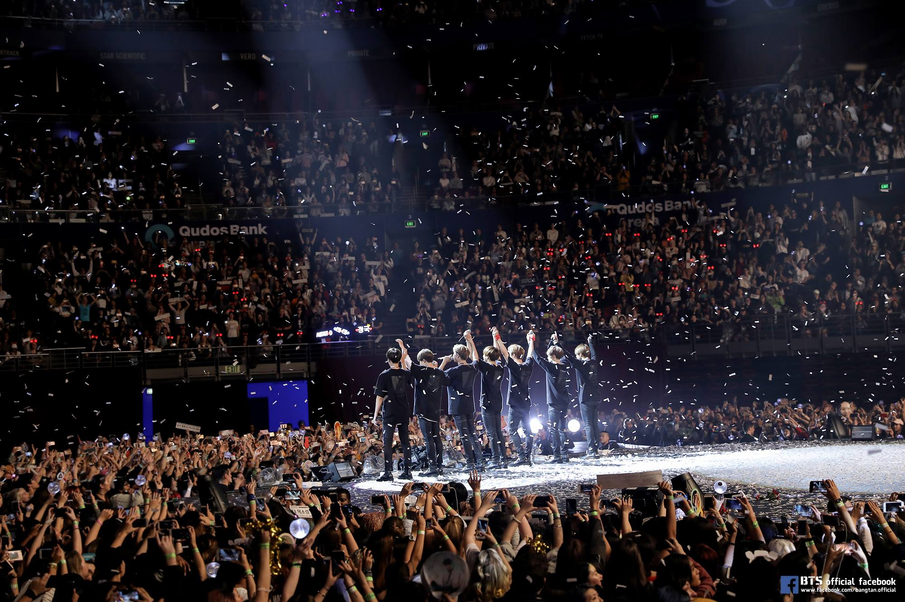
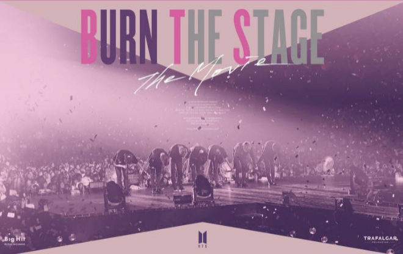
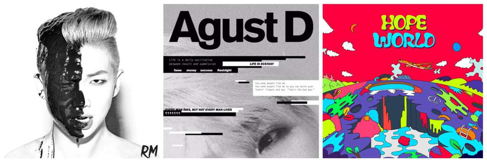

ʕ•́ᴥ•̀ʔっ 8 de los logros más destacados de BTS ʕ•́ᴥ•̀ʔっ
Desde el lanzamiento de dos álbumes #1 hasta hablar ante la ONU en Nueva York, el 2018 fue en verdad un año pionero e innovador para BTS. En los últimos 12 meses vimos cómo #V, #JUNGKOOK, #JIMIN, #JIN, #SUGA, #JHOPE y #RM se transformaron en sensaciones internacionales y sacudieron la cultura en su camino. Si en si es imposible enlistar todos los logros de BTS de este año, decidimos resaltar 8 de los logros más importantes para ilustrar cuán increíble fue para el grupo Surcoreano. Si bien el 2018 está llegando a su fin, la montaña rusa que es el éxito de BTS aún no muestra signos de desacelerar.
- ʕ•́ᴥ•̀ʔっ Su álbum nominado al Grammy
A principios de este año SUGA dijo que el siguiente paso para BTS era ganar un Grammy, el resto del grupo se reía humildemente de esto. Después de todo resultó que su sueño no era tan descabellado, a inicios de diciembre, fue anunciado que el álbum de BTS, Love Yourself Tear, estaba nominado por mejor diseño de grabación gracias al destacado trabajo de diseño de sus diseñadores visuales en el álbum, HuskyFox. Además que en Grammy 2019 hicieron una presentación junto a Lil Nas, con quien el líder del grupo (RM) hizo una colaboración.
- ʕ•́ᴥ•̀ʔっ Su gira totalmente agotada por Estados Unidos
En 2018, BTS tomó el escenario en su gira internacional Love Yourself Tour, la cual arrancó en agosto en Seúl y llevó al grupo a Reino Unido, Japón, Francia, Países Bajos, Alemania, Taiwán, Canadá, y Estados Unidos. Los catorce estadios en el tramo de la gira de los Estados Unidos se agotaron instantáneamente. Debido a su alta demanda el grupo añadió otra fecha en el Citi Field de Nueva York, además de convertirlos en los primeros artistas coreanos en la historia en tener un concierto en un estadio en Estados Unidos. Los boletos para el concierto en citifield, como era de esperarse, se agotaron en 20 minutos.
- ʕ•́ᴥ•̀ʔっ Su debut en cine y en YouTube Series
Marzo fue el mes para utilizar esa membresía gratis de YouTube Premium gracias al lanzamiento de la serie de BTS Burn The Stage. El documental de 8 partes dio un vistazo al arduo trabajo, travesuras tras bambalinas y la vida íntima de los miembros mientras se presentaban en su gira Wings: Live Trilogy World Tour. Una película adaptación de la serie fue lanzada más tarde en noviembre 15, titulada Burn a the Stage: The Movie. Solo en los EE. UU., La película llegó al número 10 en la taquilla y acumuló $ 3.54 millones en su primer fin de semana, rompiendo el récord de la producción musical de cine de eventos con mayor recaudación que anteriormente tenía One Direction.

- ʕ•́ᴥ•̀ʔっ Su emotivo discurso en la ONU
BTS fue seleccionado por las Naciones Unidas para hablar en la 73ª Asamblea General para la iniciativa juvenil "Jóvenes 2030: La estrategia de la juventud de las Naciones Unidas" y su campaña de UNICEF, "Generación ilimitada". El 24 de septiembre, el líder RM subió al podio con sus miembros detrás de él para pronunciar un discurso convincente en inglés sobre la campaña Love Myself del grupo y la importancia de "hablar tu mismo". "Cuénteme tu historia, quiero escuchar tu voz y quiero escuchar tu convicción", dijo RM. "No importa quién eres, de dónde eres, el color de tu piel, tu identidad de género, solo habla. Encuentra tu nombre y encuentra tu voz. “Desde su debut la filantropía ha sido un pilar clave en la carrera de BTS, y el grupo de convirtió en el primer artista surcoreano en recaudar fondos para una campaña social global con su programa Love Myself junto con la UNICEF en el 2017.
- ʕ•́ᴥ•̀ʔっ La dominación de su vídeo musical
Mientras estaban dominando los charts musicales globales, BTS también dominaba YouTube. Cuando el grupo lanzó su vivido y hit viral video musical por su nuevo single #IDOL, de Love Yourself: Answer lanzado en agosto 24, arrasó con el récord de el video más visto en las primeras 24 horas en YouTube, logrando más de 45 millones de visitas. Pero, un año despúes BTS regresó para romper ese record con "Boy With Luv" logrando más de 74 millones de vistas las primeras 24 horas.

- ʕ•́ᴥ•̀ʔっSus muchos, muchos, muchos premios ganados
Al momento de esta lista, BTS ha teenido una carrera increíble de escritura, lanzamiento y ejecución de su música en todo el mundo, ganando la enorme cantidad de 293 premios, incluidos 24 Daesang (Premios importantes en Corea del Sur), convirtiendose en el grupo con más Daesangs de la historia, Top Social Artist y Top Social Music de los Billboard Music Awards, sólo por mencionar algunos.
- ʕ•́ᴥ•̀ʔっSus Destacados Mixtapes Solo y Lanzamientos
Entremezclados entre dos comebacks, giras y promociones, el estelar bailarín J-Hope y el rapero RM también encontraron tiempo para escribir, producir y lanzar sus propios mixtapes individuales. En una verdadera moda de artista, ambos decidieron lanzar sus mixtapes en línea de forma gratuita, compartiendo un enlace de descarga a través de su twitter oficial. Lanzado en marzo, Hope World de JHOPE (apodado cariñosamente como "hixtape") incluye el sencillo funky "Daydream" y la pista de la trap husky "Airplane", que BTS luego extrapola en "Airplane Pt.2" en Love Yourself: Answer. Lanzado más tarde en el año, "Mono" de RM es un hermoso tejido de canciones coreanas e inglesas que detallan el lado artístico y conmovedor del líder de BTS, especialmente escuchado en canciones como "Forever Rain" y "Seúl".
- ʕ•́ᴥ•̀ʔっ"La competencia de BTS, es sólo BTS"
Gaon Chart anunció oficialmente que el último álbum de la boy band surcoreana, "Map of the Soul: 7”, vendió 4,114,843 copias durante el mes de febrero. Cabe mencionar que el mini álbum de BTS en 2019, “Map of the Soul: Persona”, tenía los récords de las ventas más altas de álbumes de un mes (3,229,032) y las ventas más altas de álbumes de un año (3,718,230) en la historia de Gaon Chart.